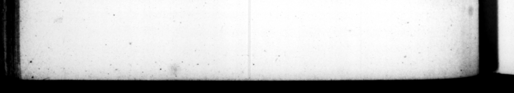

102 | 75. Feſtos & ſolennes dies profuſiſſime, nonnunquam joculariter tantum, celebrabat. Saturnalibus, & ſi quando alias libniſſet, modo munera dividebat, veſtem & anrum, & argenrum : modo nummos omnis note, et iam veteres regios ac peregrinos : interdum nihil præter cilicia & ſpon gias, & rutabula, & forcipes, atque alia id genus, titulis ob| ſcuris & ambiguis, Solehat & inæqualiſſimarum rerum ſortes, & averſas tabularum picturas in cunvivio vendirare ; incertoque caſu ſpena mercantium vel fruſtrari vel explere: ita ut per ſingulos lectos licitatio fieret, & ſen jactura ſeu lucrum communicaretur. 76. Cibi (nam ne hoc quidem omiſerim) mini mi erar, que vulgaris fere, Secunda. rium j anem, & piſciculos minutos, & caſeum bubulum manu preſſum, & ficos virides hiferas max ime appetebat: veſcebaturque & ante cœenam quocumque tempore & Ic co _ ſtomachus P genderaſtet erba 1phus ex epiſtolis ſunt, Nos in eſſedo pa nem & palmulas — Et irerum : Dum ctica ex regia domum redes, pa nis unciam cum paucis acinis wve duracine comedi, Et rurſus, Ne Fudeus quidem, mi Tiberi, tam diligenter ſabbatis jejunium ſervat, quam ego hodie ſervPav: qui in balneo demum poſt horam pri mam nottis duas bucceas manducavi prius quam ungut inci perem. Ex hac inobſervantia nonnunquam vel ante initum, vel poſt dimiſſum convivium ſalus ceœnitahat, cum pleno convivio nihil cangcrec, | 77. Vini quoque natura parciſſimus erat. Non amplius ter bibere cum ſolitum ocenam in caſtris apud Mutinam Cornelius Nepos tradit. C su ET. TRKANQ. uper 75. — and ſolemn ways Joy he 1 ver i ve manner, at any ot her time when the fit Iver e ſumetimes eint of all ſorts, even of ih antiend kings of Rome, and foreign pieces u ſometimes nothing but hair-cloth, ſpongen peels and pincers, and other t 2 of that kind, with obſture and amb:guous inſeriptions upon them. He uſed alſo to jell tickets of things of v unequal valus, and pictures with t back ſides turn'd towards the company at table; and ſo by an uncertam fy the expect ation chance balk or grati of the purchaſers: nd this ſort of trafcloaths, gold, and fil 4 ualy celebratcd in a Very ed. ſometimes only in 4 jocular way. In the Saturnalia, cook him, he would * difiribute to his company fick paſſed round the whole company, . every one being obliged to buy ſomething, and to take his chance J. toſs or gain with the reſt. 76. He was @ man of a little femach ( for I muſt not omit even this article) and commonly lived udn 4 plain diet. He was 4 great loyer coarſe bread, your little faſhes, aud cheeſe made of cow's milk, and fg: of that kind tha: comes twice 4 year, He weuld eat at any time b. fore ſupper, and in any place, if be had an appetice. The following wor relatin | ſribed rom kis epiſtles. I car à little bread and ſome {mall dares in my chaiſe, And again, Whilſt I return home from the palace in my chalr, I eat an ounce of bread, and a railins, And again, No Jew, m dear Tiberius, ever keeps a faſt ſo ſtrictly upon the ſabbath, as I have kept one to day; who in the bath, and after the firſt hour of the nights eat two mouthfuls of bread, before begun ro be anointed, From this = to thi: matter 1 have tran great indiffcrency atout his diet, he ſometimes ſupped by kimſeif, before his company 7 7 7 they had done ; would not touch a l ar table with his gueſts, 77. He was naturally vn abſie* mious for C. Neprs ſays, that be ujed but to drink thrice at ſupber in the camp at Modena ; and when he gave himſelf the greateſt freedom, he 3
